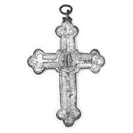

Catalog › CE-0047 · LOV1999-41
Cruce-relicvar cu simbolurile Evangheliștilor
a doua jumătate a sec. XIV (1351–1400) · loc necunoscut · Muzeul Național Maghiar, Budapesta, inv. Ő/1.84.1
double-sided reliquary cross (enkolpion), aramă; a doua jumătate a c. XIV (1351–1400); find spot unknown; kept at Muzeul Național Maghiar, Budapesta.



Identificare
- Categorie
- Encolpion bivalv (relicvar)
- Material
- Aramă
- Tehnică
- Turnare în relief; Gravare (incizie); Aurire
- Dimensiuni
- Î 96 × L 76 mm
Iconografie
- Avers
- Evangheliști în medalioane
- Descriere avers
- Placa din față, din tablă; chenar de zigzag gravat; în mijloc, o cruce desenată cu linie triplă; la capetele brațelor, simbolurile Evangheliștilor, turnate și fixate cu nituri, aripate, cu filacteră: sus Ioan, în stânga Matei, în dreapta Marcu, jos Luca. Corpul lui Hristos lipsește, dar se păstrează cuiele coclite care îl fixau.
- Descriere revers
- Pe spate, chenar de linii; în mijloc, o cruce îngustă, cu suprafață netedă, ale cărei capete sunt crini stilizați cu foaie de mijloc colțuroasă; în cercul de la întretăiere, o minusculă gotică M. Fondul este umplut cu linii de zigzag.
Datare și atribuire
- Datare
- a doua jumătate a sec. XIV (1351–1400)
- Centru
- Atelier local
Descoperire
- Context
- Colecție (fără context)
- Coordonate
- 47.4913° N, 19.0626° E
- Precizia locului
- Loc de păstrare (loc de descoperire incert)
Păstrare și referințe
- Colecție
- Muzeul Național Maghiar, Budapesta
- Nr. inventar
- Ő/1.84.1
- Bibliografie
- Zs. Lovag, Mittelalterliche Bronzegegenstände des Ungarischen Nationalmuseums (Catalogi Musei Nationalis Hungarici, Series Archaeologica III), Budapest, 1999, p. 32, cat. nr. 41, reprodusă la Abb. 41 a-b (planșele, p. 136). Bibliografie citată în sursă: Nepublicată în sursă.
- Figura
- Abb. 41 a-b
- Planșe
- Lovag 1999, planșele, p. 136
- Observații
- Datare după Lovag: a doua jumătate a sec. XIV. XIV. Cruce-relicvar (Reliquiarkreuz). Placa din spate turnată, cu margine de 8 mm; sus și jos, balamale, cea de jos ruptă. Brațe drepte, cu trei capete. Ureche de agățare lipită, cu agățătoare din sârmă. Piesa a fost cumpărată de la un negustor de artă. Nepublicată în sursă. Cupru bătut, gravat, turnat, aurit. Locul descoperirii nu e cunoscut cu precizie; punctul de pe hartă marchează locul de păstrare (Muzeul Național Maghiar), nu locul descoperirii. Coordonate: nu sunt date în sursă.
Citare: Corpus Encolpiorum, CE-0047, Cruce-relicvar cu simbolurile Evangheliștilor, https://vitaliejosanu1979-ux.github.io/primul-meu-proiect/piese/LOV1999-41/ (accesat 2026-10-17).